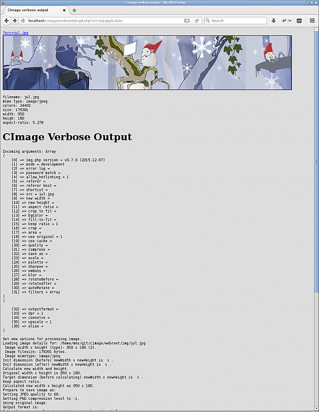

Troubleshoot image processing
Here are a few useful tools to troubleshoot the image processing and to control how the cached image is created.
#JSON representation of the image
You can get a JSON representation of the image by adding the option json. This can be useful if you need to know the actual dimension of the image, or just for troubleshooting.
For example, take the image created like this:
&w=300&save-as=jpg
Its JSON-representation is retrieved like this:
&w=300&save-as=jpg&json
Which gives the following result.
{
"src": "example/kodim24.png",
"srcGmdate": "Thu, 24 Mar 2016 08:19:09",
"cache": "example_kodim24.png_300_200_q60_co-1_jpg",
"cacheGmdate": "Sun, 20 Nov 2016 15:48:06",
"filename": "example_kodim24.png_300_200_q60_co-1_jpg",
"mimeType": "image/jpeg",
"width": 300,
"height": 200,
"aspectRatio": 1.5,
"size": 10998,
"colors": 25590,
"includedFiles": 2,
"memoryPeek": "4.306 MB",
"memoryCurrent": "0.338 MB",
"memoryLimit": "128M",
"loadTime": "0.059s"
}
I’ll use this feature for ease testing, but the feature can also be useful when one really want complete control over the resulting dimension of an image.
#Verbose output
You can visualize what happens during image processing by adding the v, verbose parameter. It will display the resulting image together with a verbose output on what is actually happening behind the scene.


This is output from verbose output.
This can be useful for debugging and to understand what actually happens during processing of the image.
This option is only available when running in development mode.
#Ignore the cache
The parameter nc, no-cache ignores the cached item and will always create a new cached item.
This can be useful when having older items in the cache and one wants to ensure that the cached item is re-created.
#Skip the original image
The parameter so, skip-original skips the original image, even if the original image is the best fit. As a result a cached image is created and displayed.
You can configure to always skip the original image. This is how the default configuration looks like.
/**
* Set skip-original to true to always process the image and use
* the cached version. Default is false and to use the original
* image when its no processing needed.
*
* Default value:
* skip_original: false
*/
//'skip_original' => false,
#Check your environment
There are tools to check your installed environment.